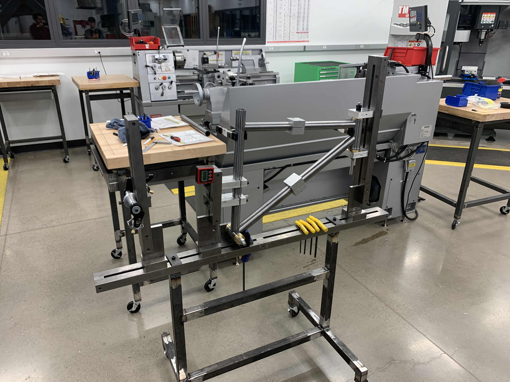

An independent study built around learning the full fabrication process — machining, TIG welding, tube bending, and fixturing — by designing and building a frame fit to my own body and riding style.
Stock frame geometries are built around averages, not individuals. This project set out to design and hand-build a frame fit to a specific rider and riding style, while using the build as a structured way to develop hands-on fabrication skills — welding, tube prep, and fixturing — that CAD work alone doesn't teach.

Left: custom rider-specific geometry layout. Right: tube alignment in a welding fixture.
Every stage of the build — from raw tube to finished frame — was done by hand, which meant precision had to come from process and fixturing rather than machine automation.
| MACHINING | Machined tube ends and fixtures to the tolerances needed for clean miters and consistent joint fit-up before any welding began. |
| FORMING | Used tube bending and notching to hit the custom geometry, balancing rider fit against the practical limits of hand-forming steel tube. |
| WELDING | TIG welded the full frame, sequencing joints deliberately to manage heat input and control frame alignment through the weld. |
Left: TIG welding in progress on the front triangle. Right: completed frame, ready for finishing.
Completed a fully rideable, custom-fit steel frame from raw materials — building direct, hands-on fluency in machining, tube forming, and TIG welding that now underpins how I approach manufacturability in every design I do.